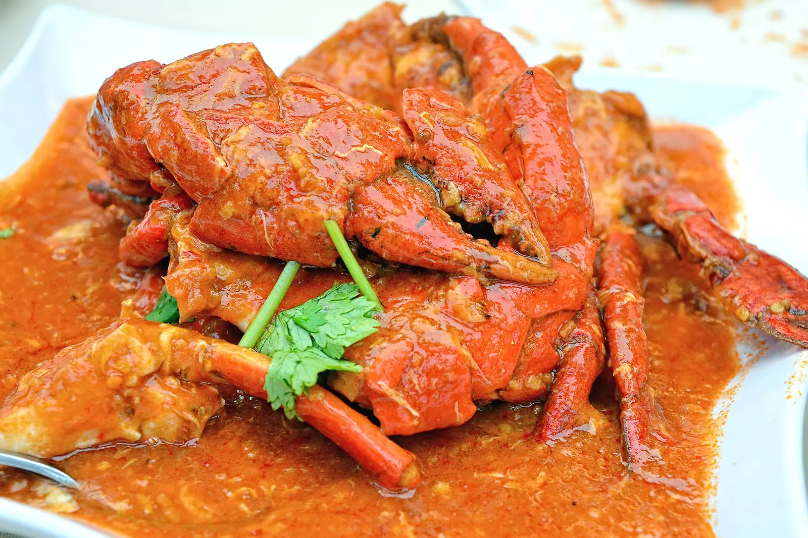
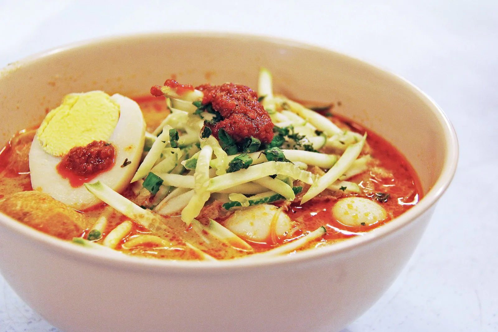
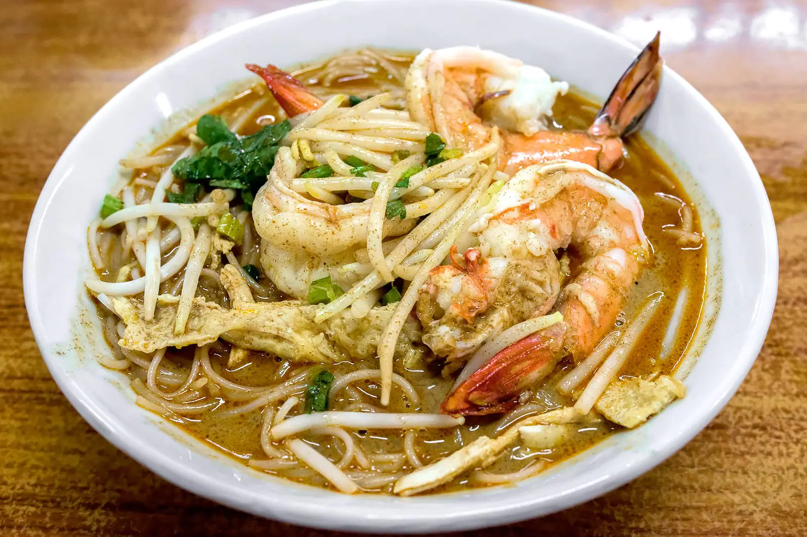
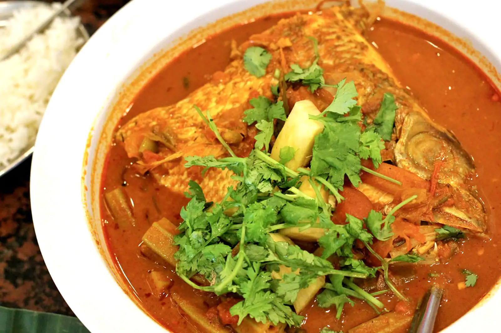
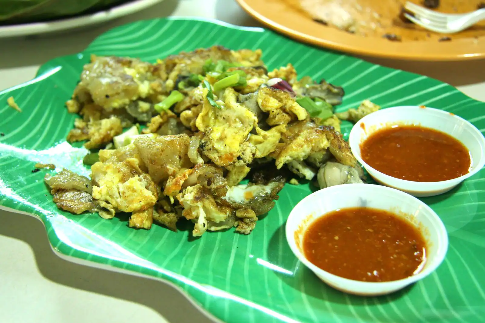

文化
新加坡飲食同時反映出新加坡與馬來西亞兩國文化，與兩國文化的多樣性，來自中國、印尼、印度、土生華人、越南、柬埔寨、菲律賓、緬甸，以及來自十九世紀英國所帶來的西方移民傳統（特別是英語和一些葡萄牙語影響的歐亞，被稱為基斯）所產生的相互影響。各族群除了帶來原有的飲食文化外，甚至融合出新的特色。在新加坡的小販攤檔中即可見得此一現象：華裔廚師受到由印度文化的影響，可能會嘗試多樣化的調味品及配料，如羅望子、薑黃和酥油；而印度廚師則可能提供炒麵等菜，足以顯示全球化的現象，進一步影響新加坡的飲食習慣與料理方式。
特色
許多菜式是由早期的來自中國南方移民（包含閩南人、潮州人、廣東人、客家人、海南人等民系）帶到新加坡，並調整口味，以適應當地的情況。由於受到馬來人、印度人及其他種族的影響，並不能嚴格被視為主流的中國菜，通常屬於中國菜的一個海外沿伸分支，就像是越南的明鄉菜一樣。大多數新加坡的中國菜餚的名稱均來自中國南方的方言，最常用的方言是閩南話中的福建泉漳話。由於中國南方方言因為是以口述的方式轉進拉丁字母音，它們通常用不同的方言唸法腔調來敘述相同的菜色。
菜餚
辣蟹
叻沙
炒粿條

福建蝦麵
魚頭咖哩
煎蠔餅
